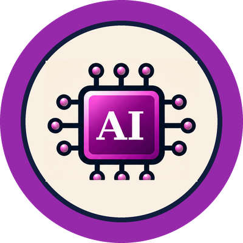

Why this framework?
Artificial intelligence tools are now part of many creative processes. Their presence, however, does not mean that all creations were produced in the same way.
This framework sets out three creation modes, each represented by a badge:
- HUMAN PRODUCTION
- AI-ASSISTED PRODUCTION
- AI-GENERATED PRODUCTION
Its purpose is not to measure the value, quality or merit of a creation. It simply aims to answer, as clearly as possible, this question:
The words we use
In this text, the word creation refers to the work or content presented to the public: a text, an image, a video, a piece of music, a post.
The word production, printed on the badges, refers to the way that creation was produced. So a human creation carries the HUMAN PRODUCTION badge, and so on.
What does a badge apply to?
A badge describes one specific creation, as the public sees, reads or hears it: an article, an image, a video, a post, an episode.
- When a website, book or channel brings together creations made in different ways, each creation carries its own badge.
- A general badge placed across an entire website does not replace the badge for each creation.
- When a creation is significantly modified after publication, its badge must be reviewed.
Who chooses the badge?
The badge is a self-declaration. It is chosen by the person or organization that publishes the creation, because they are the ones who know how it was produced.
The badge is not a certification granted by an outside body. It is a good-faith commitment to the public.
If a badge proves inaccurate, the person who chose it commits to correcting it promptly, and visibly when the error was significant.
A fundamental principle
The right badge does not simply depend on whether artificial intelligence was present or absent.
Using a tool that includes some AI functions does not automatically turn a human creation into an AI-assisted one.
Conversely, spending a lot of time writing prompts for an AI does not necessarily mean the work has become a human creation.
What matters is the real nature of each contribution.
Directing isn’t always shaping
This distinction settles many cases, but it must be applied with nuance.
Giving AI a topic, writing general instructions, asking for several versions, rejecting some and selecting one is a form of direction. These actions can be important, but on their own they do not demonstrate a substantial creative contribution.
Direction itself becomes creatively substantial when it determines, precisely and continuously, the meaning, structure, arrangement, narrative or final form of the creation. On the other hand, multiplying prompts or choosing among results without this decisive influence on the final work remains mainly an activity of requesting and selecting.

Human production
Definition
A creation is human when its creative or intellectual content is conceived and made by one or more people.
Digital or automated tools may be used, provided they do not themselves generate any part of the final creative content.
In simple terms
The human creates.Examples
A person:
- writes an article themselves;
- draws an illustration on a graphics tablet;
- edits a video from footage they created or filmed;
- adjusts the brightness or colours of a photograph;
- uses a spelling and grammar checker;
- automatically stabilizes a video;
- removes background noise;
- crops or resizes an image.
These operations may rely on very advanced technologies, sometimes even artificial intelligence, without the tool becoming the creator of the content.
AI-assisted production
Definition
A creation is AI-assisted when both the human and artificial intelligence make a real contribution to the final content, and the human makes a substantial creative contribution.
This contribution may take the form of directly creating or modifying the content, rewriting, assembling, creative editing, or detailed, sustained creative direction that truly determines the meaning, structure, arrangement, narrative or final form.
In simple terms
The human creates with AI.What “substantial creative contribution” means
A creative contribution is substantial when it decisively influences the meaning, structure, arrangement, expression or form of the final result. It must be perceptible in the final creation, even if it can’t be measured in words, pixels or minutes. A final result that differs greatly from the raw AI output can be a clue, but on its own it is not a sufficient criterion.
Some borderline examples:
What the human does
The actions that count are those through which the human personally works on the final content. They may, for example:
- write part of the content;
- rewrite passages;
- correct and rework the content in depth;
- change the composition themselves;
- gather and assemble several elements;
- add elements they created themselves (text, drawing, photo, music, voice);
- transform the result over many steps;
- give detailed, sustained creative direction that determines the narrative, arrangement or final form.
What is generally not enough on its own
Taken in isolation, the following actions are generally not enough to move a creation from “generated” to “assisted”:
- coming up with a general idea without further work on the result;
- setting a goal or general constraints;
- giving general instructions or direction that does not shape the final work;
- asking for several proposals or variations;
- rejecting or selecting proposals without any other substantial contribution.
Fact-checking is valuable editorial work and strongly recommended, but on its own it does not change who created the content. However, when artistic or editorial direction is precise, continuous and decisive to the point of shaping the structure, narrative, arrangement or final form, it can amount to a substantial creative contribution.
Example
A person designs a visual identity. They determine the concept, the message, the categories to represent, the hierarchy, the colours and the layout constraints. An AI produces different proposals. The person compares them, rejects some versions and then directs, precisely and continuously, changes to composition, typography, proportions and graphic elements until the final result. They may also finish some adjustments in graphic design software.
The final product is no longer simply an AI generation: its structure and form were determined by a joint creative process, under substantial human direction.

AI-generated production
Definition
A creation is AI-generated when artificial intelligence produces most of the final creative content from a human request.
The human may have chosen the topic, written instructions, asked for several versions or selected the result they prefer. They may also have made minor edits.
However, the creative substance of the final product comes mainly from the AI generation.
In simple terms
The human asks, AI creates.Example
A person writes:
Artificial intelligence produces the image. The person picks the one they prefer and uses it practically as is.
Even if the human prompt was detailed and thoughtful, the image itself was produced mainly by artificial intelligence.
The number of prompts doesn’t determine the category
Classifying a creation by the number of prompts sent to artificial intelligence would be unreliable.
One person may write a single prompt and then deeply transform the result themselves. Another may write a hundred extremely precise prompts without ever modifying the generated content themselves.
In the first case, the creation is AI-assisted. In the second, it remains AI-generated.
So the question is not: “How much work did the human put into their prompts?”
No arbitrary percentages
This framework deliberately avoids rules such as “30% human,” “50% AI” or “70% human.”
Such percentages would be hard to measure objectively and would give a false sense of precision.
Instead, a creation is classified according to the nature of the human and AI contributions.
Technical AI isn’t creative AI
This distinction is essential.
An AI-powered tool can perform a purely technical task without generating creative content. For example:
- removing unwanted noise;
- correcting exposure;
- stabilizing an image;
- automatically cutting out a subject;
- correcting spelling, grammar or punctuation;
- converting a file format;
- slightly improving sharpness.
These functions do not, on their own, require a creation to be declared AI-assisted.
However, when an AI invents, writes, rephrases, draws, composes, interprets, substantially transforms or generates content that ends up in the final product, its contribution becomes creative.
Common cases
Writing tools that rephrase. Correcting spelling, grammar or punctuation, or suggesting one word at a time, remains technical: HUMAN PRODUCTION. As soon as the tool rewrites whole sentences or paragraphs and those rewrites are kept, its contribution becomes creative: AI-ASSISTED PRODUCTION.
AI translation of a human text. Translating means choosing words, a tone, a rhythm: it is interpretive work. A human text translated by AI therefore carries the AI-ASSISTED PRODUCTION badge, with the note “AI translation.” If a person then revises the translation in depth, the badge stays the same, but the note can become “AI translation, revised by a human.”
A synthetic voice reading a human text. Voice, intonation and rhythm are an interpretation, and that interpretation is done by AI. The creation carries the AI-ASSISTED PRODUCTION badge, with the note “AI-generated voice, human text.”
Automatic captions and transcripts. When they faithfully reproduce human speech, they remain technical and don’t change the badge.
Mixed creations
Some productions are more complex. A video may, for example, include:
- a script written by a human;
- AI-generated images;
- a synthetic voice;
- human editing;
- music composed by a human.
In that case, the badge is chosen by considering the creation as a whole:
- if no component was created by AI: HUMAN PRODUCTION;
- if some components were created by AI, but the human personally made a substantial creative contribution to the final product: AI-ASSISTED PRODUCTION;
- if almost all components were created by AI and the human mostly just requested and roughly assembled them: AI-GENERATED PRODUCTION.
When a explanatory note is required
When a mixed work includes an AI-generated component that either plays a substantial creative role or, if disclosed, could change the public’s understanding of how the work was produced, the badge must be accompanied by a short explanatory note that says who did what. For example:
- “AI-generated images, human script and editing.”
- “Human text, AI-generated voice.”
- “AI-generated illustration, human text.”
The badge gives the general information. The explanatory note provides the necessary transparency when AI’s involvement is creatively important. A minor, purely technical component, or one with no substantial creative impact, does not on its own require a explanatory note.
The two-question test
To choose a badge, two questions are enough in the vast majority of situations.
Did artificial intelligence generate, write or creatively transform any part of the final content?
- No →HUMAN PRODUCTION
- Yes →Go to question 2.
Did the human make a substantial creative contribution to the final result?
For example: creating, writing, rewriting, transforming, assembling, creative editing, or detailed, sustained creative direction that truly determines the meaning, structure, arrangement, narrative or final form.
- Yes →AI-ASSISTED PRODUCTION
- No, or very little →AI-GENERATED PRODUCTION
Reminder: simply choosing, rejecting or multiplying instructions is not enough. However, precise, continuous and decisive direction can be a substantial contribution when it truly shapes the final result.
A quick cross-check
If the answer to question 2 seems uncertain, ask this question:
- If yes, the AI-ASSISTED PRODUCTION badge is appropriate.
- If almost all the creative content would disappear, the AI-GENERATED PRODUCTION badge is the right one.
When in doubt
- If doubt remains between HUMAN and AI-ASSISTED → choose AI-ASSISTED.
- If doubt remains between AI-ASSISTED and AI-GENERATED → choose AI-GENERATED.
The goal is not to find the most flattering category. The goal is to be able to answer this question simply and honestly:
This transparency is what gives the system its value.
What the badges don’t mean
- HUMAN doesn’t mean “better.”
- AI-ASSISTED doesn’t mean “less authentic.”
- AI-GENERATED doesn’t mean “without human involvement.”
The badges are neither a ranking nor an award. They simply indicate the creation mode.
The badges and the law
This framework is a voluntary transparency initiative. It does not replace legal obligations.
Some laws may impose specific disclosure, labelling or information requirements for certain content created or modified with AI. These requirements vary by jurisdiction, type of content and context of use, and they can change quickly.
Users of the framework remain responsible for checking the rules that apply in their jurisdiction. Any notice required by law must be provided in the prescribed form, in addition to the voluntary badge.
The rule to remember
And when in doubt: the badge that informs the public most clearly about AI’s real involvement.
Badge usage guidelines
New in version 1.3. These guidelines complement the framework without changing the definition of the three creation modes, the two-question test or the rule for when in doubt. They govern the visual presentation of a voluntary declaration; they create no certification and no value judgment.
1. The three badges and their colour code
All three designs share the same structure: round shape, gold rim, navy upper band bearing “creationmode.org”, cream background, central pictogram and a readable label. Only the accent colour changes with the category.
Figure 1 — Reference designs: full badges, with green, blue and purple accents.
The colours make the badges easier to recognize; they do not rank the creation modes. The written label is always required: colour alone is not a declaration.
2. Graphic integrity rules
- Keep the circular shape, the gold rim and the navy blue shared by all three badges.
- Keep the labels intact: “Human production,” “AI-assisted production” and “AI-generated production.” Never shorten “assisted” or “generated” to the point of creating ambiguity.
- Don’t swap the colours: green = human; blue = AI-assisted; purple = AI-generated.
- Don’t add laurels, a publisher’s signature, a curved smile under the text, a medal, an inspection seal, or any wording suggesting official approval.
- Avoid distortion, rotation, cropping, excessive transparency, overlapping and insufficient contrast.
- On a busy background, add clear space or a neutral light backing without altering the badge’s shape or text.
3. Two badge formats
Full-size badge. This is the reference format. It includes the name of the creation mode, its pictogram and the upper band. It should be preferred whenever the text remains truly readable at the display size.
Mini badge. It keeps the round shape, the pictogram and the accent colour, but drops the text that would be unreadable. It serves as a secondary visual marker and must not replace the written declaration when understandable information is expected.
4. Size test and readability criteria
These thresholds are design guidelines from a visual test, not universal guarantees: readability also depends on the screen, contrast, compression and context. For print, check a copy at actual size; don’t convert pixels directly to millimetres.
 AI-ASSISTED
AI-ASSISTED
AI-GENERATEDFigure 2 — Mini badges. The pictogram must always be accompanied by a text label or an accessible caption.
5. Placement by medium
6. Explanatory note and transparency
The badge summarizes the general mode. A explanatory note specifies the roles when AI’s involvement is creatively important or likely to change the public’s understanding. It is not a way to get around choosing a category.
- “AI-generated images, human script and editing.”
- “Human text, AI-generated voice.”
- “AI-generated illustration, human text.”
- “Production: editing and narration by a person; AI-generated visuals.”
These sample notes should be adapted to the process actually followed. The person making the declaration remains responsible for the accuracy of these notes and for any applicable obligations.
7. Honest use and no certification
- A badge is a voluntary self-declaration by the author or publisher. It does not guarantee independent review, quality, copyright ownership or legal compliance.
- Never present a graphic sign as proof of an audit, certification or approval by an outside body.
- If the creation changes substantially, review its category and correct the display and explanatory note as needed.
- Respect legal or platform requirements that may apply in addition to this voluntary initiative.
- Where possible, keep an internal note explaining the tools used and the decisive human and automated contributions.
8. Quality check before publishing
- Does the chosen badge faithfully describe who shaped the final result, according to the two-question test?
- Is the category spelled out, readable and in the right place for each creation?
- If a mini badge is used, is it paired with a caption or accessible label?
- Is a explanatory note needed to explain an important AI-created component?
- Does the badge respect its colours, shape and labels, with no certification-like signs?
- Have the platform’s requirements and the applicable law been checked?
9. Graphic sources and updates
The illustrations in this version document the approved appearance as of November 16, 2026. Hex codes, colour profiles, clear space, vector master files, transparent variants and export formats will be set in a separate technical file before wide distribution. No exact colour should be inferred from screenshots or the compressed PDF.
The framework remains voluntary and evolving. A purely graphic change does not retroactively affect the category of a creation. Later changes to the system are dated and documented.
Framework versions
This framework will evolve with tools and practices. Each new version has a number and a date. A creation keeps the badge chosen under the version in force when it was published.
Scope of version 1.3
What’s new in this edition concerns how the badges are presented: colours, graphic integrity, readability, formats and display rules. The criteria used to classify creations are kept without substantive change.
A badge is not a judgment of the work: it is a faithful, understandable declaration of how it was created.
To print or share